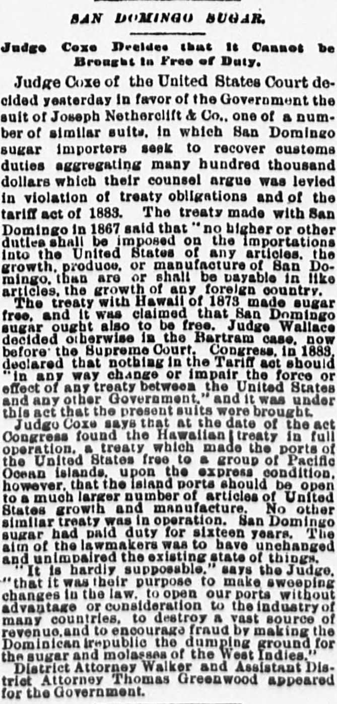
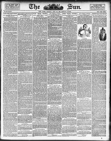

To a much larger number of articles of United States growthA un número mucho mayor de artículos de producción de los Estados Unidos
The Sun. New York [N.Y.], June 20, 1886. Page 1. Published by Benj. H. Day. A daily newspaper, 1833–1916.The Sun. New York [N.Y.], 20 de junio de 1886. Página 1. Publicado por Benj. H. Day. Periódico diario, 1833–1916. View the originalVer el original


See the full pageVer la página completaAccording to The Sun, San Domingo sugar had paid duty for sixteen years, and lawmakers aimed to keep the existing state of things unchanged to prevent the Dominican Republic from becoming a dumping ground for foreign sugar and molasses. The excerpt also notes that District Attorney Walker and Assistant Government Attorney Thomas Greenwood appeared in the proceedings. Additionally, the newspaper reported on its own campaign against demoralizing baseball pictures and cigarette makers' photographs displayed on cigarette cards in Brooklyn.Según The Sun, el azúcar de Santo Domingo satisfizo derechos arancelarios durante dieciséis años, esforzándose los legisladores por mantener inalterado dicho régimen a fin de impedir que la República Dominicana se convirtiera en un punto de descarga para azúcar y melazas foráneas. Añade el texto que el fiscal de distrito Walker y el procurador gubernamental adjunto Thomas Greenwood intervinieron en los autos. Al propio tiempo, el rotativo dio cuenta de su campaña contra las láminas desmoralizadoras de béisbol y las fotografías de tabaqueras expendidas en cajetillas de cigarrillos en Brooklyn.
FULL TEXT:TEXTO COMPLETO:
The Sun June 20, 188620 de junio de 1886
SAN DOMINGO SUGAR.AZÚCAR DE SANTO DOMINGO.
Judge Coxe Decides that it Cannot be Brought In Free of Duty.El juez Coxe decide que no puede ser introducido libre de derechos.
Judge Coxe of the United States Court decided yesterday in favor of the Government the suit of Joseph Netherclift & Co., one of a number of similar suits, in which San Domingo sugar importers seek to recover customs duties aggregating many hundred thousand dollars which their counsel argue was levied in violation of treaty obligations and of the tariff act of 1883. The treaty made with San Domingo in 1867 said that "no higher or other duties shall be imposed on the importations into the United States of any articles, the growth, produce, or manufacture of San Domingo, than are or shall be payable in like articles, the growth of any foreign country."El juez Coxe de la Corte de los Estados Unidos decidió ayer en favor del Gobierno el pleito de Joseph Netherclift & Co., uno de un número de pleitos similares, en los que importadores de azúcar de Santo Domingo buscan recuperar derechos de aduana que agregan muchos cientos de miles de dólares que su abogado argumenta fueron recaudados en violación de obligaciones de tratados y de la ley arancelaria de 1883. El tratado hecho con Santo Domingo en 1867 decía que «no se impondrán derechos más altos u otros sobre las importaciones a los Estados Unidos de cualesquiera artículos, el crecimiento, producto, o manufactura de Santo Domingo, que los que sean o deban pagarse sobre artículos similares, el crecimiento de cualquier país extranjero».
The treaty with Hawaii of 1873 made sugar free, and it was claimed that San Domingo sugar ought also to be free. Judge Wallace decided otherwise in the Bartram case, now before the Supreme Court. Congress, in 1883, declared that nothing in the Tariff act should "in any way change or impair the force or effect of any treaty between the United States and any other Government," and it was under this act that the present suits were brought.El tratado con Hawái de 1873 hizo el azúcar libre, y se reclamó que el azúcar de Santo Domingo también debería ser libre. El juez Wallace decidió lo contrario en el caso Bartram, ahora ante la Corte Suprema. El Congreso, en 1883, declaró que nada en la ley Arancelaria debería «de ningún modo cambiar o perjudicar la fuerza o efecto de ningún tratado entre los Estados Unidos y cualquier otro Gobierno», y fue bajo esta ley que se trajeron los presentes pleitos.
Judge Coxe says that at the date of the act Congress found the Hawaiian treaty in full operation, a treaty which made the ports of the United States free to a group of Pacific Ocean islands, upon the express condition, however, that the island ports should be open to a much larger number of articles of United States growth and manufacture. No other similar treaty was in operation. San Domingo sugar had paid duty for sixteen years. The aim of the lawmakers was to have unchanged and unimpaired the existing state of things.El juez Coxe dice que a la fecha de la ley el Congreso encontró el tratado hawaiano en plena operación, un tratado que hizo los puertos de los Estados Unidos libres para un grupo de islas del Océano Pacífico, bajo la condición expresa, sin embargo, de que los puertos de las islas estuvieran abiertos a un número mucho mayor de artículos de crecimiento y manufactura de los Estados Unidos. Ningún otro tratado similar estaba en operación. El azúcar de Santo Domingo había pagado derechos por dieciséis años. El objetivo de los legisladores era mantener sin cambio y sin perjuicio el estado existente de las cosas.
"It is hardly supposable," says the Judge, "that it was their purpose to make sweeping changes in the law, to open our ports without advantage or consideration to the industry of many countries, to destroy a vast source of revenue, and to encourage fraud by making the Dominican republic the dumping ground for the sugar and molasses of the West Indies."«Es apenas suponible», dice el Juez, «que fuera su propósito hacer cambios radicales en la ley, abrir nuestros puertos sin ventaja o consideración a la industria de muchos países, destruir una vasta fuente de rentas, y fomentar el fraude haciendo de la república dominicana el vertedero del azúcar y la melaza de las Indias Occidentales».
District Attorney Walker and Assistant District Attorney Thomas Greenwood appeared for the Government.El Fiscal de Distrito Walker y el Fiscal de Distrito Auxiliar Thomas Greenwood comparecieron por el Gobierno.